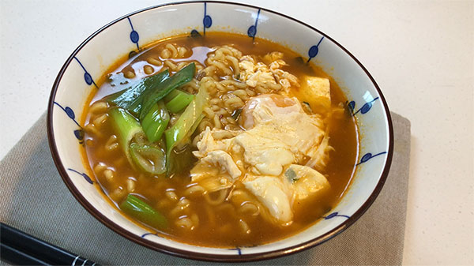

라면 끓이기 맛있는 해물을 이용한 라면 끓이기 와 넘나 맛있겠다! 재료 라면 물 대파 해물믹스 만드는 방법 물 550ml를 끓인다. 끓는 물에 면과 스프, 해물믹스를 넣고 4분간 끓인다. 그릇에 담는다.  맛있게 완성된 라면 라면 봉지의 레시피를 확인하세요! 라면마다 조리법이 다를 수 있습니다. 신라면: 물 500ml 진라면: 물 550ml 맛있게 드세요!